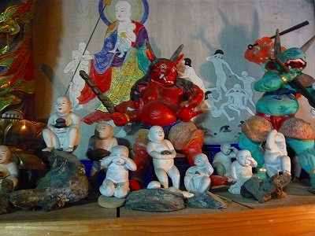

新潟県柏崎市。お魚市場と
珍妙な博物館群でおなじみの観光地である。
しかし平成19年の中越沖地震により甚大な被害を受けた事は皆さんも記憶に新しかろう。
そんな柏崎市の市街地に閻魔堂がある。
毎年6月に開催される有名な
えんま市はここの閻魔サマの事を指している。つまり柏崎市のシンボルとでも言うべき存在なのだ。
その閻魔堂、思いのほか小さなお堂でなおかつ境内の様子もひっそりとしている。
とても20万人が押し寄せるイベントの中心地とは思えない佇まいだ。

で、これが閻魔堂。明治29年建立。
本来は土蔵造りに唐破風の向拝付きだったが、向拝は先の震災でごっそり落ちてしまい、今は仮設のものが付いている。
↑堂内にあった被災時の写真
中に入ってみる。
内陣中央には閻魔大王が鎮座し、その他の王と共に十王を形成している。つまり正確には十王堂ということになろう。
司命、司録、奪衣婆付きの本格的な十王堂である。

震災時にも奇跡的に無事だった十王像だが、基礎部分を含めて建物は所々破損し、柱の間にワイヤーが張ってある。
なお、訪問当時、向拝再建を目指して寄進を募っていた。

堂内にあった地獄絵図。昭和29年に奉納されたもの。賽の河原、血の池地獄、業の秤、閻魔の裁き、奪衣婆などのシーンが確認できる。
おびんずる様。ベイビーグッズを着けられてチョット恥ずかしそう。
倒壊した向拝の上に乗っていた鬼。一体の角が折れてはいるものの、向拝の破損程度から比べたら奇跡的に状態は良い。
私には想像できないのだが、どうやら地震で建物が被害を受けた場合、建物全てがぐっちゃぐちゃに崩れるのではなく一部だけが壊れて他は全然大丈夫だったりするケースもあるようだ。
震災直後の画像を見たが、例えば先の地獄絵図などは絵自体は被害もなく壁に架かっているのだが、その隣の壁は崩れてしまっていた。
向拝が崩れ落ちても堂内の十王像をはじめとする仏像に被害がなかったというのもなんとも不思議な話ではないか。
↓こちらは震災以前から堂内にあった宝珠の玉。閻魔堂の屋根の天辺にあったものだ。
さて。
…散々震災やら閻魔サマやらのハナシをしてきましたが、
ココからが本題です。
十王像が並んでいる手前にガラスケースがある。
その中に色鮮やかな衣をまとった
お地蔵さんが安置されているのだが、注目はその足元。
賽の河原の様子が
土人形によって表現されているのだ。
当サイトではこれまでにも賽の河原を現した土人形をいくつか紹介してきた。
このサイトを長年ご愛顧いただいている皆様は既にご存知かとは思うが、私はこの手の
３Dジオラマ系仏像、とりわけ立体賽の河原や立体地獄といった死後の世界系３Dジオラマが大好きで大好きで仕方がない、ひとことで言えばド変態なのである。
従ってこのように素敵な立体賽の川原を見てしまうと、もう、それだけでウットリとしてしまうのだよ。
なお、未訪問だがこのほかにも新潟県内にはいくつか賽の河原人形があるようだ。
他ではあまり見かけない、
新潟県オリジナルの表現形態として今後とも多いに注目していく所存である。
赤鬼、青鬼、チビッコが3体、そして無数に散乱し、あるいは積み上げられているのは石。まるで
カジノのチップみたいだぞ。
このような立体賽の河原は時代が下って
立体地獄巡りの雛形になっているように思えてならない。
（どうか大穴が来ますように…と拝んでるわけじゃないよ）
いつの間にか勤行が始まっていた。
何だか自分のド変態趣味を諭されているような気がして（ド変態にありがちな被害妄想です）早々に退散することにした。
お堂の前にあった石像。地震云々とは関係なく風雪により劣化したものだろう。顔が摩滅していて怖いす。
閻魔堂の周辺には被災したままの建物や仮設住宅、妙に新しい更地など震災の激しさを感じさせる痕跡がたくさんあった。
まだ完全に復興するには時間がかかるかもしれないが、かつての生活を取り戻していただくことを陰ながら祈るばかりである。
閻魔サマもエール！
一方、柏崎からも程近い小国に
桐盛院というお寺がある。
現在は長岡市に属しているが、かつては小国町といい、地理的には柏崎と小千谷の中間に位置する町のはずれにある寺院だ。
こじんまりしたお寺だが、ここにも
賽の河原ジオラマが展開されている。
中央にお地蔵さん、左右に鬼が4体、そしてその手前には大きさにして数センチの小さな土人形の子供たちが石を積んだり泣いたり。
もちろんハアハアいいながら見ましたよ。ド変態ですから。

背後には賽の河原の描き割りがある。
物悲しい気分になりつつも珍子丸出しのガキンチョや笑い顔の子供もいたりして、ユーモラスな面もある。
尚、このお寺には収蔵庫のような建物があり、五百羅漢像がずらりと並んでいて、賽の河原よりも全然メインっぽかった。当たり前か。
新潟の立体賽の河原巡り、まだまだ続きそうな予感がムンムンですわ。
※情報提供は負け犬さんです（柏崎の閻魔堂）